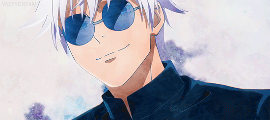
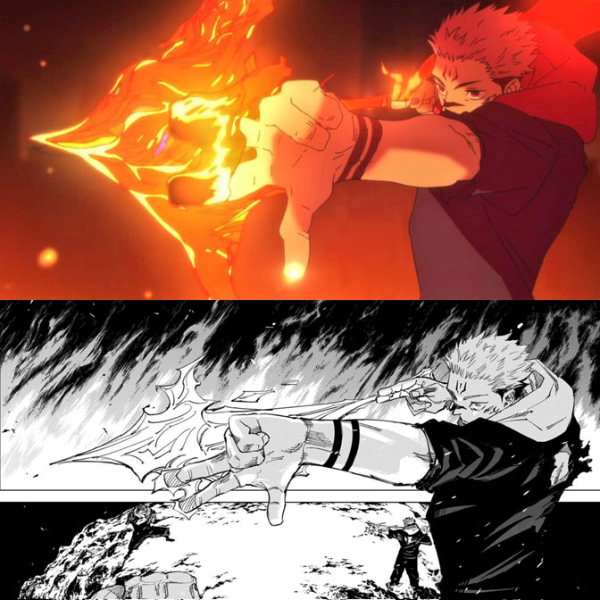
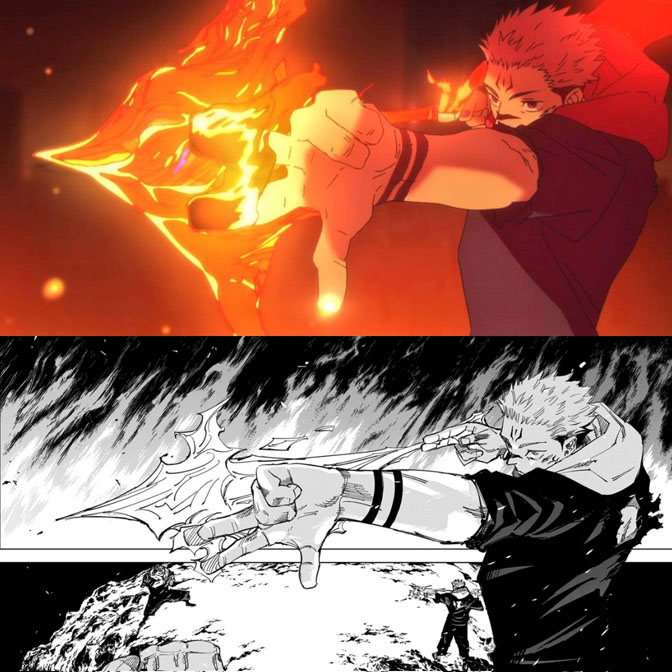

El anime mantiene el orden del manga, pero algunas peleas y escenas se aceleran para mejorar el ritmo en pantalla. El manga suele ser más pausado y detallado.
El anime es más limpio y colorido. El manga tiene trazos más expresivos y oscuros, con diseños que a veces varían según la emoción de la escena.
El manga muestra sangre y heridas con mucho más detalle. El anime suaviza algunas escenas para televisión, aunque mantiene el impacto visual con buena animación.
El anime a veces agrega diálogos o momentos entre personajes que no estaban en el manga. Esto enriquece la relación entre ellos o ayuda a aclarar la historia.
La música, las voces y los efectos de sonido hacen que el anime genere más impacto emocional en peleas o escenas dramáticas. El manga depende del dibujo y los diálogos.
 
